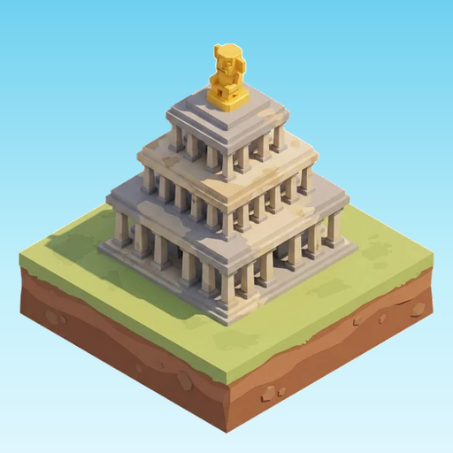
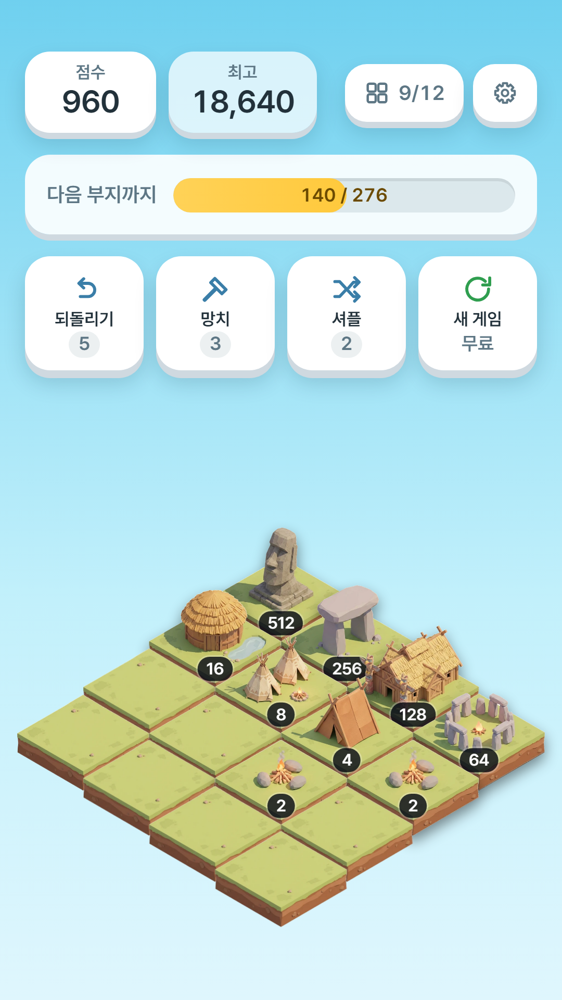
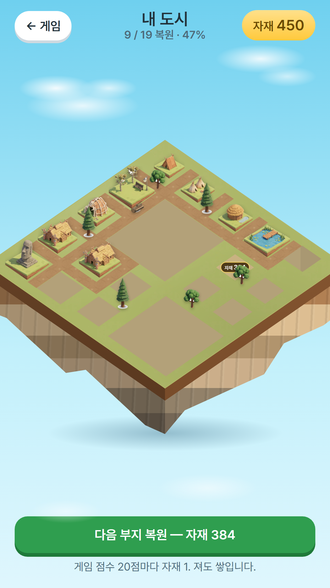
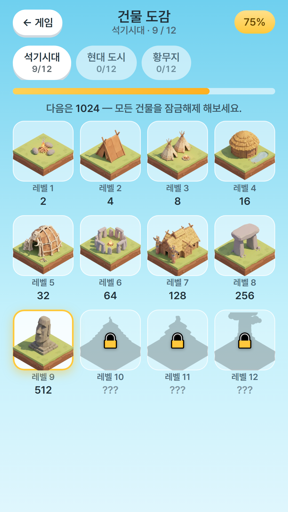

도시 재건
한 판의 점수가 자재가 됩니다. 빈 부지를 복원하면 길과 가로등, 랜드마크가 차례로 올라갑니다.
도시 재건 2048

숫자를 합쳐 오두막을 마천루로.
판이 끝나도 도시는 남습니다.
같은 건물 둘을 붙이면 한 단계 위 건물이 됩니다. 모닥불이 오두막이 되고, 오두막이 마을이 되고, 끝내 구름 위 탑에 닿습니다.
보통의 2048은 막히면 그걸로 끝입니다. 쌓아 올린 게 전부 사라지죠. 문명 2048은 한 판의 점수가 재건 자재로 바뀌어 내 도시에 쌓입니다. 자재로 빈 부지를 하나씩 복원하면 길이 이어지고, 나무와 가로등이 들어서고, 마침내 랜드마크가 올라갑니다.
망해도 괜찮습니다. 이번 판도 도시에 보태집니다.
아이소메트릭으로 기울어진 판 위에서 네 방향으로 쓸어 넘깁니다.



한 판의 점수가 자재가 됩니다. 빈 부지를 복원하면 길과 가로등, 랜드마크가 차례로 올라갑니다.
새 건물을 처음 만들면 도감에 남습니다. 시대마다 열두 칸, 못 본 건물은 실루엣으로 기다립니다.
규칙은 아는 그대로지만, 블록이 아니라 건물이 자라는 걸 지켜보게 됩니다.
쓸기가 불편하면 설정에서 방향 버튼으로 바꿀 수 있습니다.